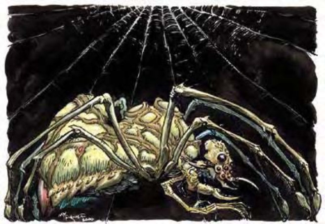

看起来像变种蜘蛛，但下颚下方有两只似人的小臂。变形蛛是可变的智慧蜘蛛，拥有类法术能力。天生形态下的变形蛛形状似大蜘蛛，其隆起的躯体比人类稍大。带尖牙的下颚和一般蜘蛛相差无几。下颚下方有两只2英尺长的小臂，各自连接着四只多关节的手指与一只双关节的拇指。变形蛛约150磅重。脑在其隆起的背部中。变形蛛通晓通用语、木族语。
| 资料栏位 | 变形蛛 (Aranea) 中型魔法兽（变形） |
|---|---|
| 生命骰 | 3d10+6 (22HP) |
| 先攻 | +6 |
| 速度 | 50英尺 (10格)、攀爬25英尺 |
| 防御等级 | 13 (+2敏捷、+1天生)、接触12、措手不及11 |
| 基本攻击/擒抱 | +3 / +3 |
| 攻击 | 啮咬+5近战 (1d6附加毒素)；或蛛网+5远程 |
| 全力攻击 | 啮咬+5近战 (1d6附加毒素)；或蛛网+5远程 |
| 占用/触及 | 5英尺/5英尺 |
| 特殊攻击 | 毒素、法术、蛛网 |
| 特殊能力 | 移形、黑暗视觉60英尺、昏暗视觉 |
| 豁免 | 强韧+5、反射+5、意志+4 |
| 属性 | 力量11、敏捷15、体质14、智力14、感知13、魅力14 |
| 技能 | 攀爬+14、专注+8、脱逃+5、跳跃+13、聆听+6、侦察+6 |
| 专长 | 精通先攻、钢铁意志 B、武器娴熟 |
| 环境 | 温带森林 |
| 组织 | 单独或群落 (3-6) |
| 挑战级数 | 4 |
| 宝藏 | 标准钱币、双倍宝物、标准物品 |
| 阵营 | 通常绝对中立 |
| 进化 | 视人物职业而定 |
| 等级修正值 | +4 |
变形蛛尽量使用蛛网与法术，避免近战。战斗时，变形蛛会先试着让最具侵略性的敌人无法移动或分心。变形蛛通常携住对手以要求赎金。
毒素（特异）：每次造成伤害后，变形蛛就会注入毒素（强韧检定的DC=13）。初始伤害为1d6点力量伤害，后续伤害为2d6点力量伤害。豁免DC的调整值与体质调整值相同。
法术：变形蛛施法时视同3级术士。他们喜欢幻术系与附魔系法术，避开火法术。
一般已知术士法术（6/6；豁免检定DC=12+法术等级）：零级――“晕眩术”、“侦测魔法”、“幻音术”、“光亮术”、“提升抗力”；一级――“法师护甲”、“无声幻影”、“睡眠术”。
蛛网（特异）：蜘蛛或混种形态下的变形蛛（见下文）每天可吐出六次蛛网。蛛网的效果类似使用网子进行攻击，但其最大距离50英尺，射程单位10英尺，最大可对付体型为大型的目标。蛛网能让目标停在原地无法移动。被缠住的目标可进行“脱逃”检定（DC=13）或力量检定（DC=17）以挣脱。检定DC的调整值与体质调整值相同，且力量检定的DC包含+4种族加值。蛛网有6点生命值，硬度0，火焰可对其造成双倍伤害。
移形（超自然）：变形蛛的天生形态为中型变种蜘蛛。除此之外，变形蛛还可伪装成其他两种形态。第一种是特定的小型或中型人形生物。和兽化人情况近似，人形形态下的变形蛛外观与特征都和人形生物相同，且无法使用啮咬攻击、蛛网或毒素。第二种是中型蜘蛛与人形的混种。混种形态下，变形蛛猛一看和人形生物相去无几，但若通过“侦察”检定（DC=18），则可发现其尖牙与丝囊。混种形态的变形蛛可以使用啮咬攻击、蛛网与毒素，也可以持用武器或穿着防具。同时，变形蛛的速度变成30英尺（6格）。
除非变形蛛选择改变形态，否则即保持原来的形态。移形无法被解除，变形蛛遭杀害后也不会恢复天生形态。然而，法术“真实目光”可看到处于人形形态或混种形态下变形蛛的天生形态。
技能：变形蛛在进行“跳跃”、“聆听”、“侦察”检定时具有+2种族加值。在进行“攀爬”检定时具有+8种族加值。即使被冲撞或受威胁，他们在进行“攀爬”检定时都可以随时取10。